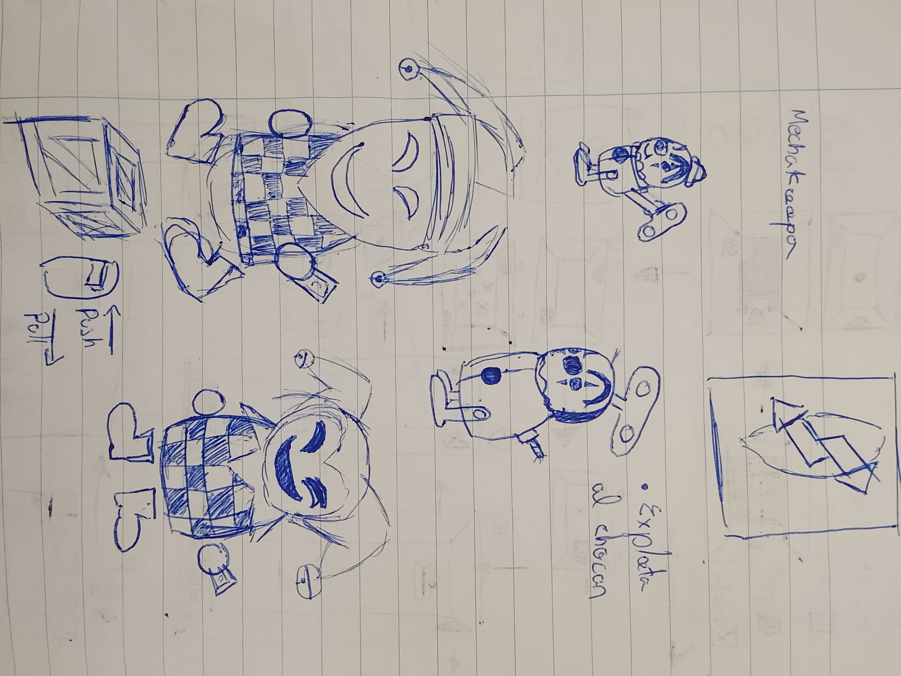
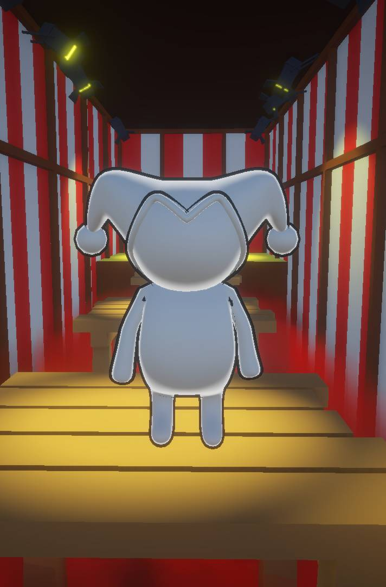
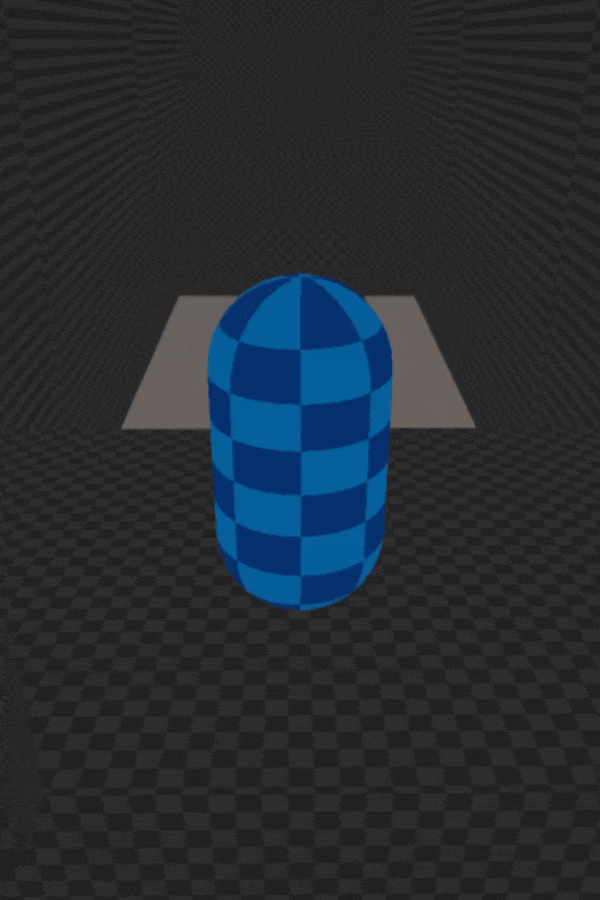
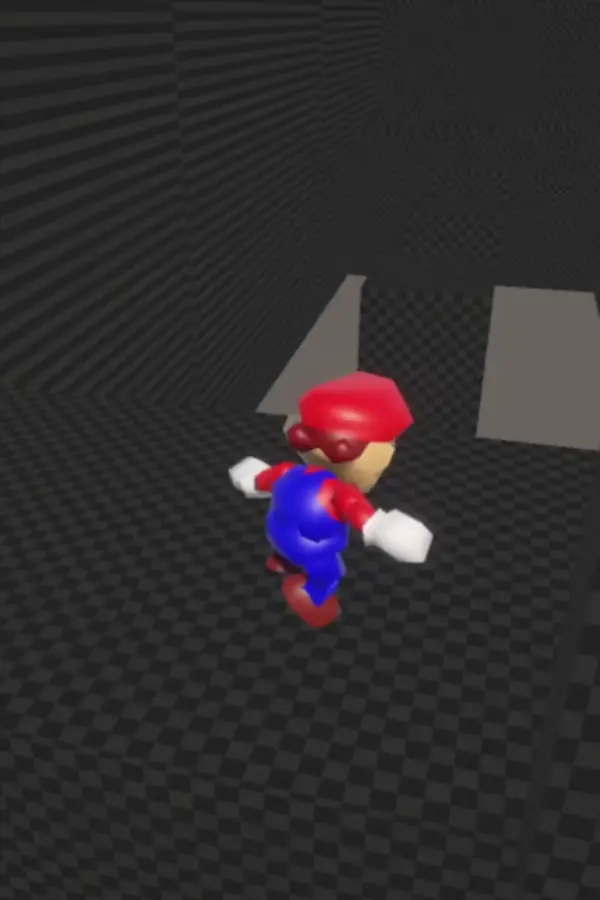
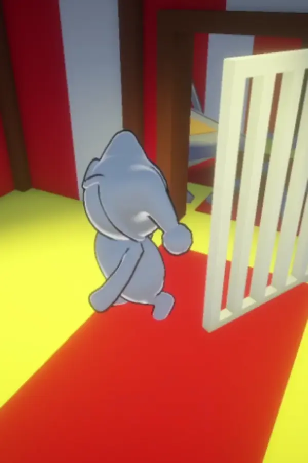
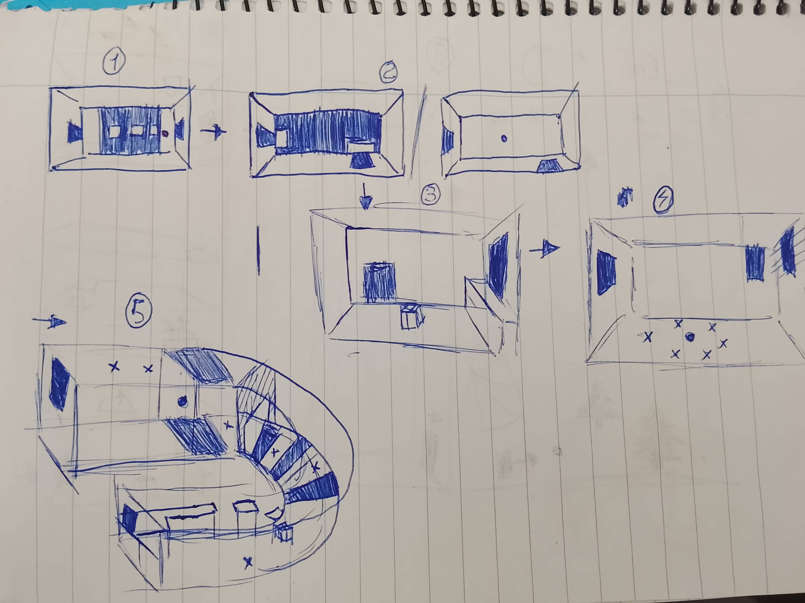
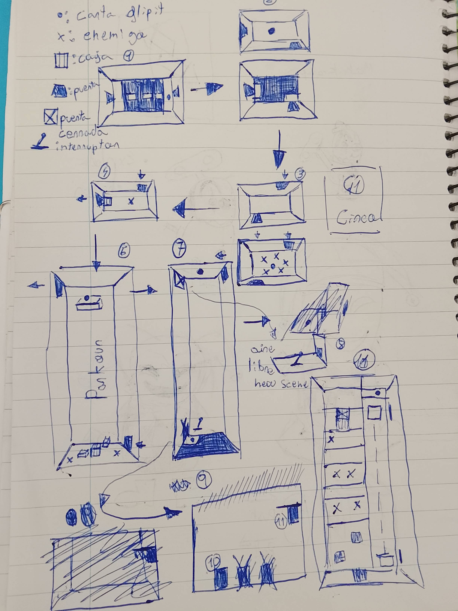
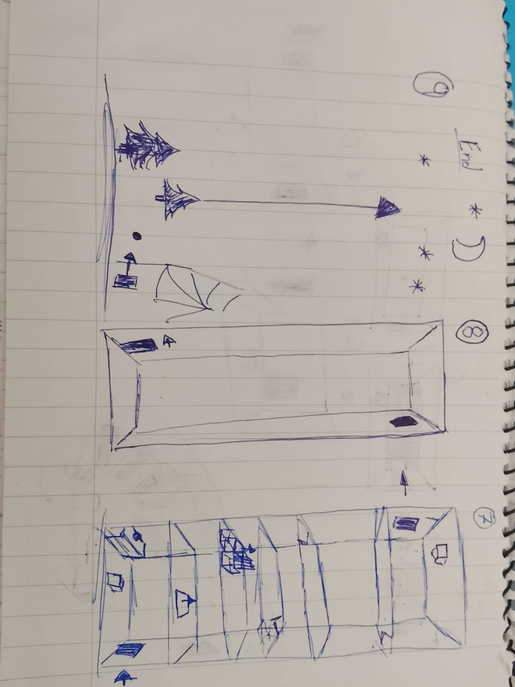
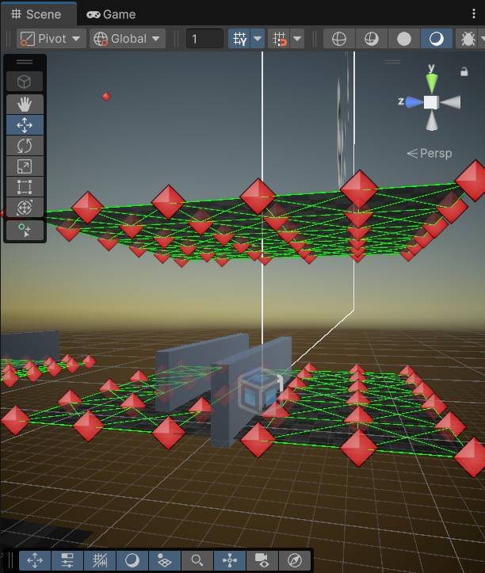
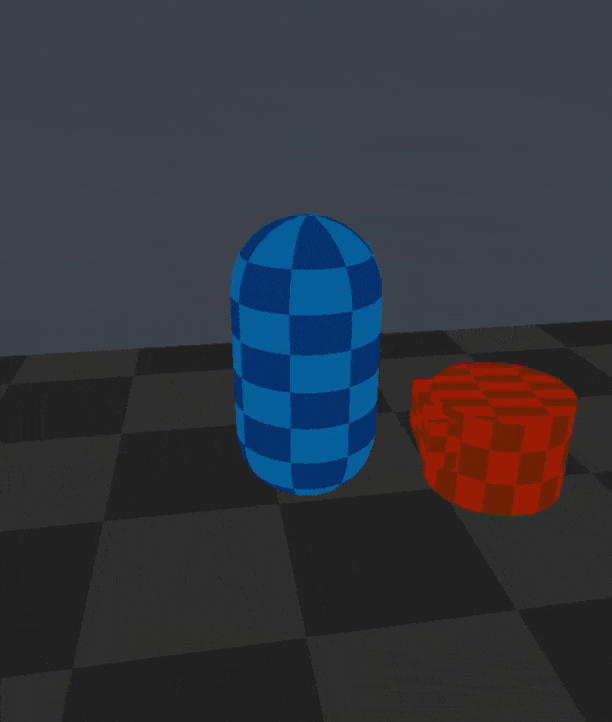

Sinno's Odyssey In The Circus
Project Information
Role: Solo Developer
Team Size: 1
Duration: 2 weeks (Game Jam)
Technologies: Unity, C#, Blender, Cinemachine, A*
Introduction and Context
Sinno's Odyssey In The Circus was my project for the Flip It Game Jam 2025 by Google Developers Group, a two-week challenge to create a video game based on the theme "Flip It." Given my passion for 3D, I decided to interpret the theme as literally as possible: by inverting gravity.
The game's narrative is simple but effective: the player takes on the role of Sinno, a jester kidnapped in a circus. Thanks to magical cards that allow him to flip gravity, he must escape captivity, solving puzzles and avoiding dangers.
The Character: Sinno
I modeled and animated Sinno in Blender, giving him a simple yet distinctive visual style. Although I didn’t have time to texture him, the character comes to life with a basic material and a Toon Shader that fits perfectly with the game's aesthetic.


Main Mechanics and Design
The mechanics were the heart of the development, focusing on intuitive gameplay that leveraged the concept of gravity inversion.
🕹️ Controls and Movement
I used Unity's Character Controller for basic movement with WASD, jump, and acceleration. For the camera, I relied on Cinemachine, which provided a quick setup, although some details remained to be polished.
For the core gravity-flipping mechanic, I created a singleton called GravityManager. With this pattern, any script can access a single instance to change the gravity direction of all physics objects and the player by pressing the 'F' key.
To develop Sinno's movement, I followed a three-phase iterative process:
- Capsule Prototype: I used a simple capsule to quickly validate movement, jumping, and gravity inversion mechanics.
- Animation Tests: I integrated a Mario 64 model with Mixamo animations to test animation flow and polish gameplay with techniques like Coyote Time and Input Buffer.
- Final Version: I replaced the prototype with my custom Sinno character and animations to achieve a smooth, satisfying gameplay experience.



🧩 Puzzles and Obstacles
I implemented a system of box puzzles that the player can push or pull. To do this, I programmed an interaction that allows the player to move boxes (by approaching and pressing 'E') using the 'W' and 'S' keys. Pressing 'Q' releases the box.
The jam’s theme, "Flip It," inspired me to interpret gravity inversion literally as the game's core mechanic. From this concept, I designed a series of platforming and puzzle levels to give real purpose to flipping gravity. On paper, I drafted level ideas where doors were on the ceiling or where progressing required multiple gravity flips in a single level. Although I designed several levels, the jam's limited time forced me to focus only on the most important ones for the final demo.



Level design started with cubes for quick prototyping and was later replaced with basic low-poly models (walls, ceilings, platforms) to create the circus environment. For bottomless falls, instead of using volumetric fog effects (not available by default in URP), I created my own effect with a particle system and a transparent cloud image.
🤖 Enemy System (Not Implemented)
Initially, I planned to use Unity NavMesh so an enemy could chase the player. However, I realized NavMesh does not work on ceilings when gravity is inverted. Therefore, I started developing a waypoint system with the A* algorithm, allowing the enemy to find the optimal path to follow the player. Although the result was promising, the jam's time constraints forced me to leave this feature unimplemented to ensure a stable release.


🔧 Control Polishing (Coyote Time & Input Buffer)
While prototyping, I noticed jumps felt a bit awkward. To improve the experience, I implemented two common platforming polish techniques:
- Coyote Time: Allows the player to jump a few milliseconds after stepping off a platform, making edge jumps feel fairer and forgiving minor mistakes.
- Input Buffer: Records the jump input just before the player lands. If the jump button is pressed in the air right before touching the ground, the jump executes automatically at the earliest possible moment.
Lessons Learned and Technical Challenges
Working in a Game Jam is a great exercise in time management and problem-solving. These were my biggest challenges and takeaways:
- Bug Management in the Build: I encountered many bugs that only appeared when compiling the final Windows build but not in the Unity editor. Many were due to variables not initializing correctly when reloading scenes or in
Start()orAwake(), an unexpected behavior that took time to debug. - WebGL Build: I attempted to create a WebGL version for the jam but faced fullscreen issues I couldn’t solve in the limited time. In the end, I delivered only a 100% functional Windows version.
- Importance of Prototyping: Using a quick prototype with cubes and a temporary avatar allowed me to test core mechanics (movement, gravity, puzzles) before investing time in final art. This was crucial to identify the need for Coyote Time and Input Buffer early enough.
- Prioritization in Game Jams: I learned to prioritize essential features. Although the A* enemy system was almost ready, I chose not to implement it in the final version to avoid risking the game's stability—a very common pitfall in game jams.